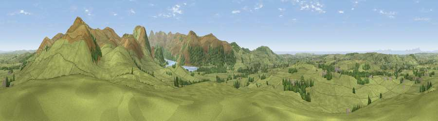

Keltonfell Top
#2264 in England · top 25% of its area beats it · near KirklandThe view, rendered

A 360° render of this exact spot computed from the terrain model, tree cover and land cover — summer colours, afternoon light, calibrated against photographs of famous viewpoints. Real trees, hedges and buildings will differ in detail.
The panorama
Grey silhouette: terrain skyline in each direction (720 bearings, Earth curvature and refraction included). Dashed green: skyline with trees (+15 m) and buildings (+8 m) as obstacles. Blue strip: how far the ground is visible on each bearing.
Where the view opens
Wedge length = distance to the farthest visible ground on that bearing (vegetation-aware). Rings at 10, 25 and 50 km.
What fills the view
88% grassland · 9% woodland · 2% water ·
Angular shares of the visible panorama (visual magnitude), not map area. Landscape diversity 0.20 (0–1 Shannon).
Key numbers
More beautiful places nearby
The staircase of upgrades: each row has a higher view potential than everything closer. Driving times are estimates from straight-line distance, calibrated against real road routing — check an actual route before setting out.
| Place | Direction | Drive | Score |
|---|---|---|---|
| Knock Murton | ENE · 2 km | ~4 min | 85.5 |
| Blake Fell | ENE · 3 km | ~8 min | 86.9 |
| Crag Fell | SSE · 4 km | ~10 min | 89.1 |
| Ullock Pike | ENE · 19 km | ~33 min | 89.4 |
| Long Side | ENE · 19 km | ~33 min | 89.5 |
| Viewpoint near Finsthwaite | SE · 43 km | ~63 min | 90.3 |
| The Knoll | S · 433 km | ~407 min | 91.0 |
54.55213, -3.42277 · source: osm peak · position refined by local search. Computed location — check access rights before visiting.